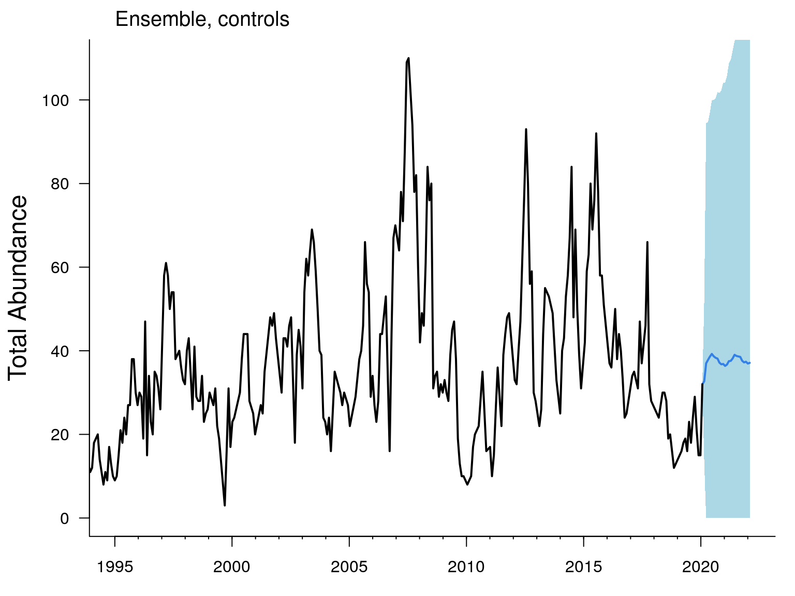
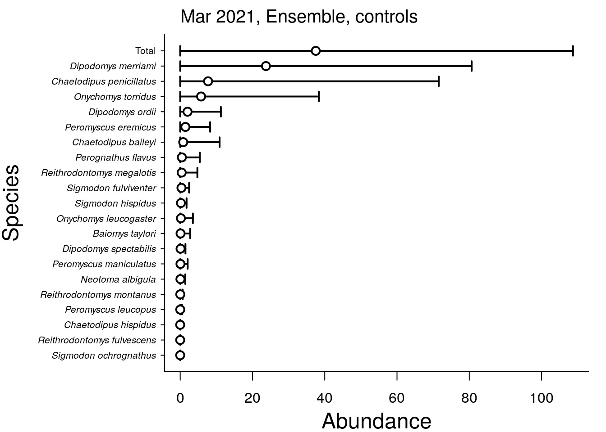
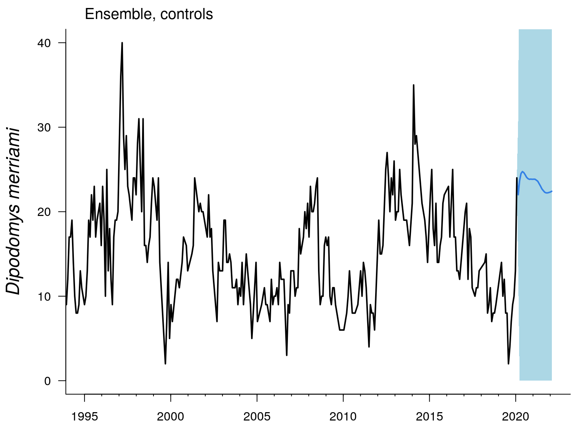
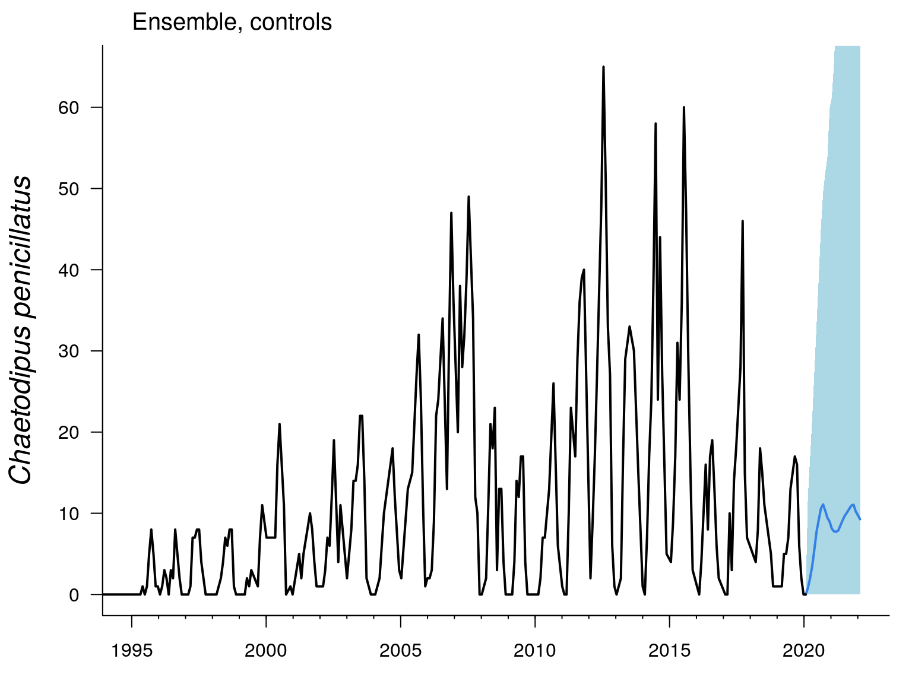
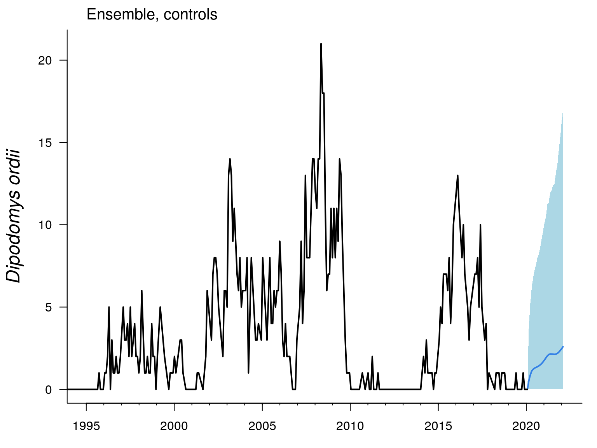

Welcome to Portal Forecasting! This is a website run by the Weecology team, comprised of Ethan White’s and Morgan Ernest’s lab groups at the University of Florida. We are a group of interdisciplinary ecologists broadly interested in collaborative approaches to empirical and computation ecology, open science, and open data.
On this website, you’ll find information about our ongoing efforts to forecast a time series of rodent abundances from The Portal project, a long-term experimental monitoring project in desert ecology. Enjoy!
This is the forecast for next year’s sampling of rodents in the control plots at Portal. The black line indicates the historic total rodent abundance. The blue line indicates the Ensemble model’s forecast (unweighted average of the individual models’ forecasts) for total rodent abundances over the next 12 months, along with 95% confidence intervals.

Point forecasts and 95% confidence intervals for specific species at the site for the next sampling period.

These figures are similar to the primary Total Abundance Forecast above, but for the abundance of three common rodent species.
